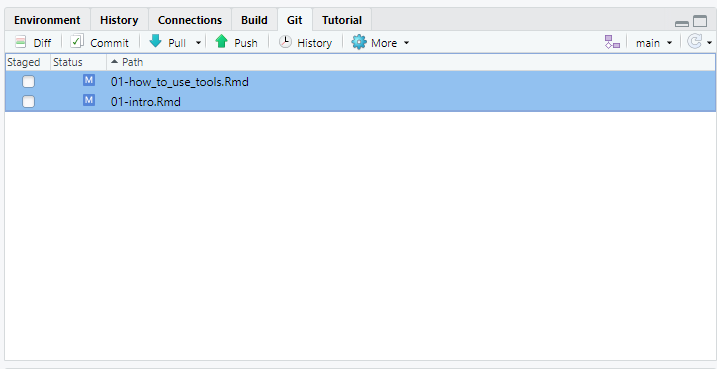

Chapter 2 How to use tools
2.1 Tạo thư mục làm việc
Khi sử dụng Rstudio thì nên tạo thư mục project để toàn bộ files sẽ nằm trong đó.
Cách thực hiện xem ở đây https://alexd106.github.io/intro2R/howto.html#rstudio_proj-vid
Lợi thế là trong folder project này, ta có thể tạo các folder con như images, data, tables, … để thuận tiện lưu riêng từng loại dữ liệu. [hiện tại làm sao để cấu hình cho hình ảnh nó tự động lưu theo từng folder thì chưa biết cách, thấy có package ‘here’ mà không biết cách dùng).
Lưu ý là khi dùng bookdown để render books thì tên của heading là ghi tiếng Anh cho lành, vì nếu ghi tiếng Việt thì nó render bị lỗi unicode.

2.2 Chèn hình ảnh
Có các cách chèn hình khi sử dụng Rstudio như sau:
• Chuyển qua chế độ Visual rồi insert hình ảnh. Sau đó hình ảnh sẽ được lưu trong folder _book/images khi render bằng knitr.
• Nếu gõ theo kiểu source code thì
knitr::include_graphics("images/cover.jpg")• Nếu copy và paste từ trên Internet thì dùng add-on imageclipr <https://github.com/Toniiiio/imageclipr>. Hình ảnh sẽ lưu mặc định trong working directory.
• Nếu copy và paste hình ảnh theo kiểu thủ công thì hình ảnh mặc định sẽ lưu ở C:/Users/tandu/AppData/Local/RStudio/tmp/paste-B717C571.png như vậy thì khi xuất bản online sẽ không thấy. Do đó phải đưa hình ảnh vào trong thư mục project (theo kiểu thủ công) hoặc dùng add-on imageclipr theo kiểu trực tiếp trong Rstudio (nhưng ở dạng Rmarkdown, còn Rmarkdown visual thì bị lỗi).
2.3 Chèn video
Sử dụng link này https://video-to-markdown.marcomontalbano.com/
Hoặc syntax []({video-url} "Link Title")
2.4 Văn phạm tiếng Anh
Cách sử dụng dấu ba chấm ellipses. https://t.me/c/1605387342/140
Cách chèn âm thanh vào theo cách upload lên github rồi play từ URL. Chưa tìm ra cách play từ source trên hard disk.
Sử dụng package embedr https://github.com/mccarthy-m-g/embedr
library(embedr)
embed_audio(src = "https://tanduc307.github.io/light/An%20ellipsis%20(plural_%20ellipses)%20is%20a%20punctuation%20mark%20consisting%20of%20three%20dots..mp3")2.5 Trích dẫn
Xem hướng dẫn ở đây là làm được https://inbo.github.io/tutorials/tutorials/r_citations_markdown/
2.6 Cú pháp Markdown
2.7 Setup Github cho RStudio
Mục đích là để thuận tiện lưu trữ toàn bộ dữ liệu của dự án R mà khỏi cần copy, save as thủ công. https://intro2r.com/github_r.html
Khi có file nào đó thay đổi thì ở Tab Git này sẽ update ngay. Ta chỉ cần chọn Ctrl+A rồi Space để select all sau đó commit rồi mới push lên server Git để lưu trữ.
